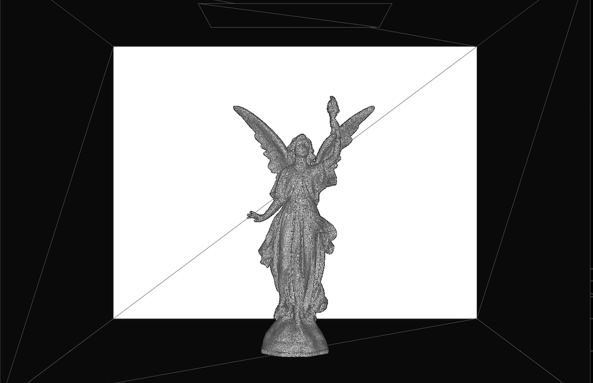

Scotty3D
Scotty3D is a three-part assignment for CMU's Computer Graphics 15-462. The intent is to fully create a 3D modeling software from a very barebones framework. The final product is able to create and edit meshes, render realistic lighting with raytracing, and create animations to move meshes.
Roughly Edited Mesh

After 2 Iterations of Catmull-Clark Subdivision
the model itself (if your browser supports WebGL)
The applications first part is a Mesh editor. This results in an applications capable of simple operations such as basic edge and vertex editing as well as more complex operations such as Beveling and Subdivisions. By combining various operations, we are able to create a very high polygon model.
Roughly Edited Mesh
After 2 Iterations of Catmull-Clark Subdivision
The next part of the process involved implementing a full Ray-Tracing renderer. Implemented features include, a full bounding volume hiearchy, calculating light bounces, evironmental lighting, shadow tracing, and various material properties.

Polygonal Mesh

BVH Generated

final render

Glass Sphere with environmental light map
Polygonal Mesh
BVH Generated
final render
Glass Sphere with environmental light map
Finally, the project concludes with an simple mesh animation set of tools. Features include motion paths with cubic spline interpolation, wave functions on a mesh surface, and pill capsule bound animation rigs with inverse kinematics
A simple animation showcasing the Cubic Spline Paths